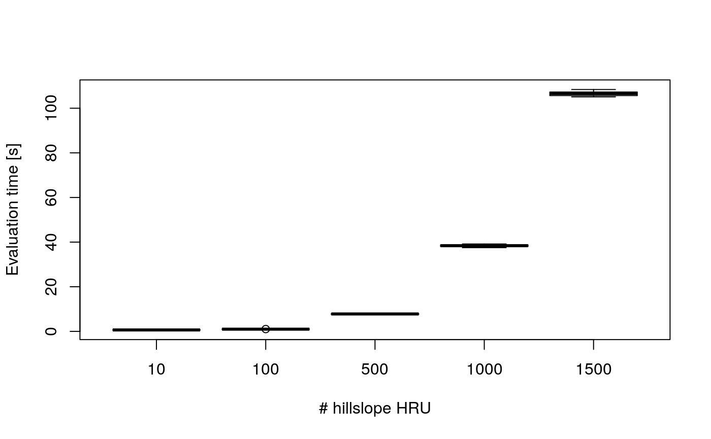
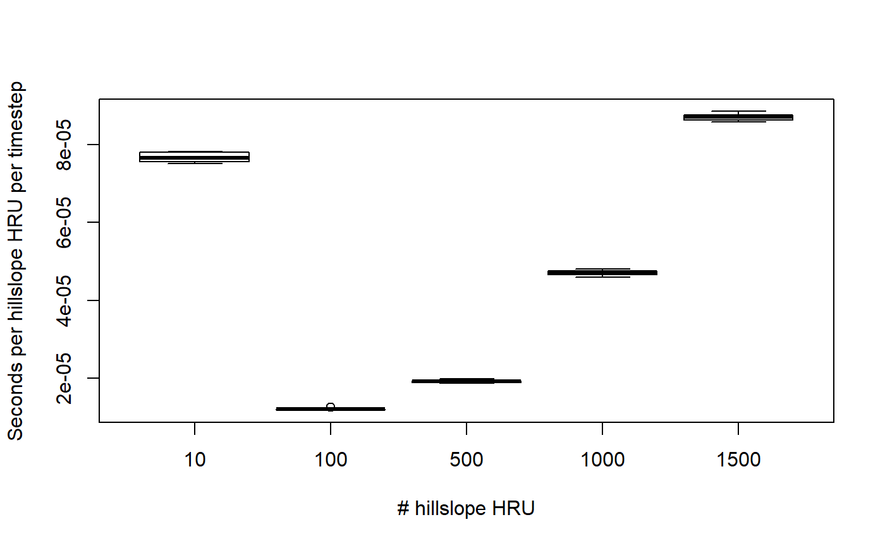
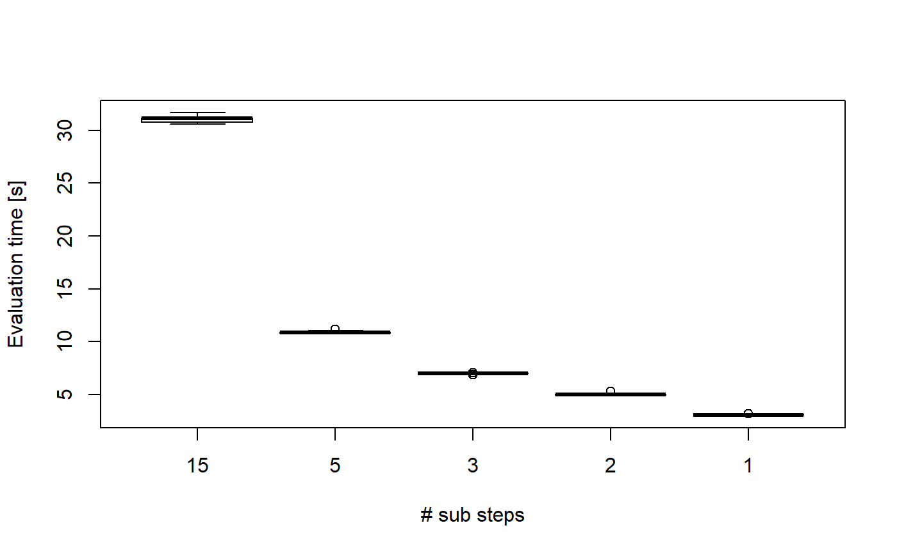
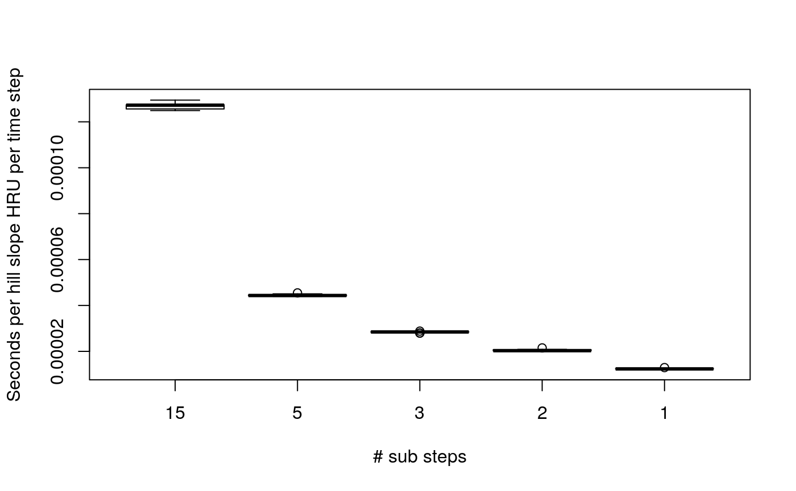

../vignettes/Performance_Evaluation.Rmd
Performance_Evaluation.RmdThis vignette briefly studies the performance of the dynamic TOPMODEL code for ‘larger’ simulations.
The scale of a dynamic TOPMODEL simulations is related to a number of factors given below along with the upper limits considered in the discussion
| Factor | Value | Comment |
|---|---|---|
| The number of time steps to be evaluated | 1e+06 | Approximately 30 years of 15 minute data |
| The number of input series | 1e+03 | Enough to allow for some representation of spatial input |
| The number of hill slope HRU | 5e+03 | Approximately 10 hill slope units for each spatial input |
| The number of channel HRU | 1e+03 | Enough to output 1000km of river in 1km lengths for a hydraulic model |
| The number of computational steps | 3e+06 | Approximately running 30 years of 15 minute data with 3 sub steps (5 minute step) |
In the following section scaling up in terms of size of the input and output data is discussed. The performance of simulations with increasing numbers of hill slope HRUs is then tested and the code profiled to suggest improvements.
The size of the input data relates to the product of the number of time steps and input series. Similarly the size of the output series relates to the product of the number of time steps and channel HRUs.
The dynatop function holds all its values within memory (including swap if enabled). The amount of memory used for the storage of variables can be broken into different classes for which approximate values for the limits outlined are shown below.
| Usage | Value |
|---|---|
| Storage of input data | 8e+03 |
| Storage of output data | 8e+03 |
| Storage of hill slope states & parameters | 4e+02 |
| Storage of channel states | 1e-01 |
R has at times quite complex memory usage patterns (see here for a fuller introduction) but the above table shows that memory usage is likely to be an issue on many systems area the input and output data size increase.
The simplest method to address memory usage limits is to split the input data into sequential chunks (e.g. a year at a time) then evaluate them initializing the model with the final states from the previous chunk. Then by reading the input and writing the output for each chunk individually the memory use can be constrained. The dynatop function allows for this, returning the final state and allowing initial states to be provided. It is left to the user to script the remainder based on their specific requirements.
The computational work load of executing dynatop is dominated by the evaluation of the evolution of the hill slope HRUs. For each computational step the equation given in the accompanying vignette are solved. The execution time of the code will therefor will depend on both the number of hill slope HRUs and number of computational steps.
To test the relationship between simulation time, the number of hill slope HRUs and number of computational time steps an number of simulations are performed based on the data for Brompton. Due to the time taken to evaluate these the data is precompiled and can be reloaded from the package data using
library(dynatop)
#> Loading required package: xts
#> Loading required package: zoo
#>
#> Attaching package: 'zoo'
#> The following objects are masked from 'package:base':
#>
#> as.Date, as.Date.numeric
#> Registered S3 method overwritten by 'xts':
#> method from
#> as.zoo.xts zoo
data("performance_record")Details of how to recreate the data are in Appendix 2.
Additional hill slope HRUs are generated by replicating the existing hill slope HRUs and associated routing matrices. The number of channels is kept constant as is the length of the simulation and computational time steps (816 steps).
The following figure shows the performance of the code for increasing numbers of hill slope HRU.

The initialization cost is clearly seen with the lowest number of hill slope HRU. For larger numbers of hill slope HRUs the performance scaling is worse then linear. Although this is not investigated in detail the profiling suggests that this may be due to matrix operations, particularly since these feature in the evaluation of the gradient calculations used with saturated zone solution and repeatedly called by deSolve,
Additional computational time steps are generated by setting the computational step form the original value of 15 minutes to smaller values down to 1 minute. A system with 300 hill slope HRU is used.

As might be hoped the scaling appears to be approximately linear with the number of computational steps.
The performance of the code is profiled using Rprof for model with 100 hill slope HRUs running for a 816 time steps. A summary of the results are shown in the following table.
| self.time | self.pct | total.time | total.pct | |
|---|---|---|---|---|
| “dynatop” | 0.22 | 22.45 | 0.98 | 100.00 |
| “%*%“ | 0.22 | 22.45 | 0.22 | 22.45 |
| “func” | 0.12 | 12.24 | 0.32 | 32.65 |
| “.Call” | 0.04 | 4.08 | 0.42 | 42.86 |
| “ |
0.04 | 4.08 | 0.38 | 38.78 |
| “unlist” | 0.04 | 4.08 | 0.36 | 36.73 |
| “pmin” | 0.04 | 4.08 | 0.08 | 8.16 |
| “eval” | 0.02 | 2.04 | 0.98 | 100.00 |
| “deSolve::ode” | 0.02 | 2.04 | 0.54 | 55.10 |
| “checkFunc” | 0.02 | 2.04 | 0.08 | 8.16 |
Of the time spent in the dynatop function 55% was spent in deSolve::ode which solves the differential equation governing the evolution of the saturated zone fluxes. This includes the time spent evaluating the function for computing the gradient of \(\mathbf{l}_{sz}\). Clearly evaluating the evolution of the saturated zone is the most computationally expensive part of the code. Around 22% of the time is spent evaluating matrix multiplications (labeled “%*%" in the table). These multiplications occur both within and outside the function for computing the gradient of \(\mathbf{l}_{sz}\).
The performance analysis above has a number of limitations but is adequate to show that longer simulation are still beyond the scope off the code. Extrapolation based on the limits above and an (optimistic) runtime of 8E-05 seconds per hill slope HRU per time step gives a runtime of approximately 5 days. In the following table we present a non-exhaustive list of potential improvements which could be considered to address this.
| Improvement | Description | Potential_Improvement | Effort |
|---|---|---|---|
| Improved analytical solutions | A close form solution or approximation to the saturated zone would remove the largest computation cost. Simplification elsewhere may given marginal speed benefits | Very Large | High |
Use of Matrix package for matrix operations |
Given at larger scales the redistribution matrices are likely to be sparse use of the Matrix package, which improves the handling of sparse matrices could be considered |
Medium/Large | Medium |
Use of the RcppArmadillo
|
RcppArmadillo is an R interface to the Armadillo high performance C++ matrix library. This may further improve performance of matrix calculations |
Medium/Large | Medium |
Compiled gradient function for deSolve
|
deSolve has the potential to interface directly with a compiled function for evaluating the gradient which may decrease the evaluation time |
Medium/Large | Medium (Low if done with RcppArmadillo) |
| Parallelization of root and unsaturated zone | The root and unsaturated zones are evaluated independently for each HRU. There evaluation could be parallelized across multiple processors. | Medium | Medium |
| Parallelization of Surface excess and saturated zone | If the matrices controlling the redistribution of the surface excess and saturated fluxes are separable the evaluation of these matrices operation can be readily parallelized. In other cases the use of a linear algebra library making use of multiple threads (implicitly parallelized) could be considered | Medium | High |
The simulations were performed on a machine with equipped with a Intel Core i7 CPU 920 @2.67 Ghz processors and 11.7 Gb of RAM. The session information is:
#> R version 3.6.0 (2019-04-26)
#> Platform: x86_64-suse-linux-gnu (64-bit)
#> Running under: openSUSE Leap 15.0
#>
#> Matrix products: default
#> BLAS: /usr/lib64/R/lib/libRblas.so
#> LAPACK: /usr/lib64/R/lib/libRlapack.so
#>
#> locale:
#> [1] LC_CTYPE=en_GB.UTF-8 LC_NUMERIC=C
#> [3] LC_TIME=en_GB.UTF-8 LC_COLLATE=en_GB.UTF-8
#> [5] LC_MONETARY=en_GB.UTF-8 LC_MESSAGES=en_GB.UTF-8
#> [7] LC_PAPER=en_GB.UTF-8 LC_NAME=C
#> [9] LC_ADDRESS=C LC_TELEPHONE=C
#> [11] LC_MEASUREMENT=en_GB.UTF-8 LC_IDENTIFICATION=C
#>
#> attached base packages:
#> [1] stats graphics grDevices utils datasets methods base
#>
#> other attached packages:
#> [1] dynatop_0.0.0.9000 xts_0.11-2 zoo_1.8-6
#>
#> loaded via a namespace (and not attached):
#> [1] Rcpp_1.0.1 pillar_1.4.1 compiler_3.6.0
#> [4] prettyunits_1.0.2 remotes_2.0.4 tools_3.6.0
#> [7] testthat_2.1.1 digest_0.6.19 pkgbuild_1.0.3
#> [10] pkgload_1.0.2 evaluate_0.14 tibble_2.1.2
#> [13] memoise_1.1.0 lattice_0.20-38 pkgconfig_2.0.2
#> [16] rlang_0.3.4 Matrix_1.2-17 rstudioapi_0.10
#> [19] cli_1.1.0 commonmark_1.7 yaml_2.2.0
#> [22] pkgdown_1.3.0 xopen_1.0.0 xfun_0.7
#> [25] xml2_1.2.0 withr_2.1.2 stringr_1.4.0
#> [28] knitr_1.23 roxygen2_6.1.1 desc_1.2.0
#> [31] fs_1.3.1 devtools_2.0.2 rprojroot_1.3-2
#> [34] grid_3.6.0 deSolve_1.21 glue_1.3.1
#> [37] R6_2.4.0 processx_3.3.1 rcmdcheck_1.3.3
#> [40] rmarkdown_1.13 sessioninfo_1.1.1 rematch2_2.0.1
#> [43] purrr_0.3.2 callr_3.2.0 magrittr_1.5
#> [46] htmltools_0.3.6 MASS_7.3-51.4 backports_1.1.4
#> [49] ps_1.3.0 usethis_1.5.0 assertthat_0.2.1
#> [52] stringi_1.4.3 crayon_1.3.4Since the simulation times are long the results discussed in this vignette are stored in a package data. To recreate them on a different systems (or for testing changes) extract the code in this vignette to an R file using
output_file <- "perf_script.R"
knitr::purl(system.file('doc/Performance_Evaluation.Rmd',package='dynatop'),
output = output_file)then evaluate only the code block below, changing file names and machine description as required. The resulting save data file is in the same format as that of the package data.
rm(list=ls())
library(dynatop)
data('brompton')
## tidy up the model so it runs
model <- brompton$model
current_total_frac_sat <- colSums( rbind(model$Wsat,model$Fsat) )
current_total_frac_ex <- colSums( rbind(model$Wex,model$Fex) )
for(ii in names(current_total_frac_sat[current_total_frac_sat>1])){
model$Wsat[,ii] <- model$Wsat[,ii]/current_total_frac_sat[ii]
model$Fsat[,ii] <- model$Fsat[,ii]/current_total_frac_sat[ii]
}
for(ii in names(current_total_frac_sat[current_total_frac_ex>1])){
model$Wex[,ii] <- model$Wex[,ii]/current_total_frac_ex[ii]
model$Fex[,ii] <- model$Fex[,ii]/current_total_frac_ex[ii]
}
## create input data
rain <- resample_xts(brompton$rain, dt = 15/60)
obs <- merge(rain,brompton$pet,all=c(TRUE,FALSE))
obs <- merge(obs,brompton$qobs,all=c(TRUE,FALSE))
obs[is.na(obs)] <- 0
obs <- obs["2012-11-23 12:00::2012-12-01",]
## function for timing simulations of different sizes
fperf <- function(model,obs,number_of_hru,number_of_replicates,
computational_timestep,return_model=FALSE){
## work out how many replicates to take
nhru <- ceiling(number_of_hru/nrow(model$hillslope))
## replicate hillslopes
hill <- do.call(rbind, replicate(nhru, model$hillslope, simplify=FALSE))
hill$id <- 1:nrow(hill)
## construct matrices
W <- as.matrix(Matrix::bdiag(rep(list(model$Wex),nhru)))
F <- do.call(cbind, replicate(nhru, model$Fex, simplify=FALSE))
rownames(W) <- colnames(W) <- colnames(F) <- paste(hill$id)
## put back into model and trim to exact number
model$hillslope <- hill[1:number_of_hru,]
model$Wex <- model$Wsat <- W[1:number_of_hru,1:number_of_hru,drop=FALSE]
model$Fex <- model$Fsat <- F[,1:number_of_hru,drop=FALSE]
## return model if required
if( return_model ){return(model)}
gc() ## garbage collection
## run replicates of simulation
replicate(number_of_replicates,
system.time(dynatop(model,obs,
initial_recharge=as.numeric(obs[1,'qobs']),
sim_time_step = computational_timestep)))
}
## run different numbers of hru
test_hru <- c(10,100,500,1000,1500)
out_hru<- list()
for(ii in 1:length(test_hru)){
out_hru[[ii]] <- fperf(model,obs,test_hru[ii],10,NULL)
}
names(out_hru) <- paste(test_hru)
## run different numbers of computational steps
test_step <- c(1,3,5,7.5,15)/60
out_ts<- list()
for(ii in 1:length(test_step)){
out_ts[[ii]] <- fperf(model,obs,300,10,test_step[ii])
}
names(out_ts) <- paste(test_step)
## profile a simulation
mdl <- fperf(model,obs,100,1,NULL,TRUE)
Rprof()
tmp <- dynatop(mdl,obs,initial_recharge=as.numeric(obs[1,'qobs']))
Rprof(NULL)
summaryProf <- summaryRprof()
## store the summary of the machine - CHANGE as required
machineSummary <- list(
cpu = "Intel Core i7 CPU 920 @2.67 Ghz",
memory = "11.7 Gb",
summary = sessionInfo()
)
## save output in the same format as that in the package data
performance_record <- list(number_obs = nrow(obs),
hru=out_hru,
comp_step=out_ts,
profile=summaryProf,
machine=machineSummary)
save("performance_record",file='performance_summary.rda')